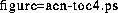

One lesson from our experiences with CSCW application development is that it is possible to collect a lot of potentially useful state information about the artifacts, individuals, processes, and the external environment surrounding collaboration. Whether this state information is actually useful depends upon whether it is located at the right place at the right time. The right place, for some users at some points in time, may be the server, while the right place for other users at other times may be the client. Different CSCW architectures make different choices about where state information is maintained, and whether or not the decision can be changed dynamically as circumstances require.
An example from our development experiences may make these issues more clear. The AEN collaborative hypertext authoring application supports a dynamically generated table of contents that represents a linear traversal of the accessible portions of a document's sectional structure. (The sectional, or logical structure of the document is not usually isomorphic to the document's hypertext storage structure.) The TOC is context-sensitive to both the state of the artifact and the state of the user. First, only those sections for which the user has read access are displayed in the TOC. Second, the sections which are newly created or which have been modified since the last time this user retrieved them are represented in bold font. This sensitivity to the state of the artifact and the state of the user means that the TOC can potentially change each time any node is written by any user or an access control value is changed. Figure 2 illustrates one such table of contents.

Figure 2: The ``TOC'' mechanism in AEN displaying the hierarchical section-based
structure
of a sample document. Each hypertext node can contain an arbitrary number
of sections, which could be actual text or links to other nodes.
Each user sees only those sections for which they have read access, and
sections which have changed since this user last read them are bold faced.
A responsive TOC mechanism requires a CSCW architecture to provide flexible support for location of state information. For example, if state information is located only on the server side, then each time a node is written by one user, all other users must retrieve the node from the server, parse it to determine the logical structure, and finally rebuild their TOC. (Due to embedded links, the logical structure of an AEN document can change almost arbitrarily when a hypertext node is written.) The overhead of these three activities on clients is unacceptable during active collaboration.
AEN solves this using Egret facilities that allow portions of the document structure state to be replicated at the clients. When an AEN client writes out a document node, it also parses the document to determine if any structural changes have occurred since it was last written. If changes occurred, it ``piggy-backs'' information onto the write event broadcast to all clients that adds information specifying exactly what structural changes occurred in this node. This approach reduces the overhead of table of contents maintenance for non-authoring clients to only the third activity: rebuilding the table. Furthermore, rebuilding occurs only when the TOC has actually changed. There is a minor amount of new overhead on the authoring client to parse the node for structural changes, but this activity can be done quite efficiently because the node is already local to the client. Were the parsing overhead substantial, it could be off-loaded to an agent quite easily.
The TOC facility demonstrates a situation in which the availability of a context-sensitive, time-dependent service depends upon whether or not the architecture can support locating ``just the right amount'' of state information at each client, keeping the rest on the server. We hypothesize that neither the WWW, nor GroupKit, nor Lotus Notes architectures can support this mechanism responsively. The WWW cannot because it does not support local state replication. GroupKit cannot because it does not support persistent state across sessions. Lotus Notes cannot because it lacks the state data abstraction mechanisms required to collect, process and represent this information efficiently.